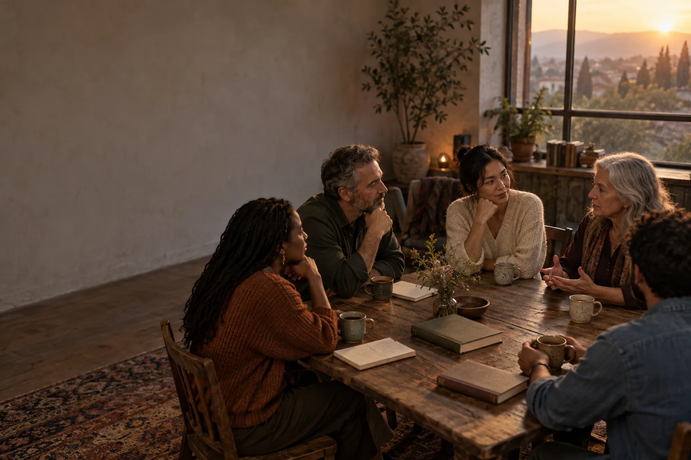

A space for curious minds and open hearts
Different beliefs.
Shared questions.
Faith in Others invites us to explore what we believe, what we wonder, and how we live alongside people who see the world differently.
All faith traditions, spiritual paths and thoughtful uncertainty are welcome.

The idea
A better conversation begins with room for difference.
Questions about meaning, belonging, justice and hope belong to more than one tradition. This project starts with the belief that we can take those differences seriously and still be generous with one another.
You do not need to agree, know the right words or speak for an entire community. You can simply bring a question and listen for the human story inside the answer.
A place to begin
What brings
you here?
Choose the thought closest to yours. We’ll offer a way into the conversation, with no right answer and no sign-up.
A WAY IN FOR YOU
Conversation themes
Some questions are
better shared.
Choose a theme to find a question worth sitting with. Each one welcomes more than one point of view.
Questions to begin with
Help shape this
Tell me what
you saw.
Faith in Others is still taking shape. After exploring the page, what do you think it could become? What would make you want to return?
A small, honest observation is more useful than a perfect answer.
An open invitation
Come as you are.
Leave with a question.
This is the beginning of Faith in Others: a collection of starting points for conversations that make space for both conviction and curiosity.
Find your starting point